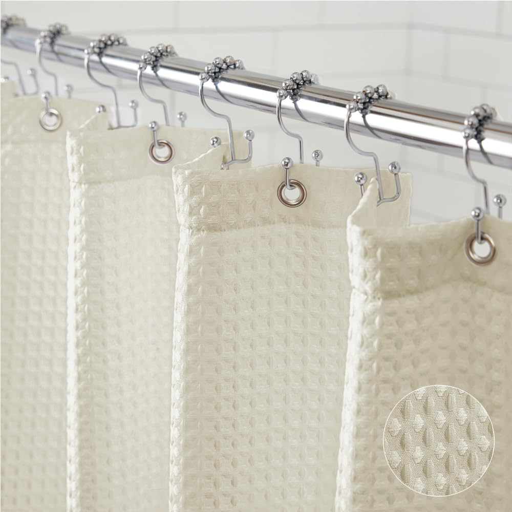
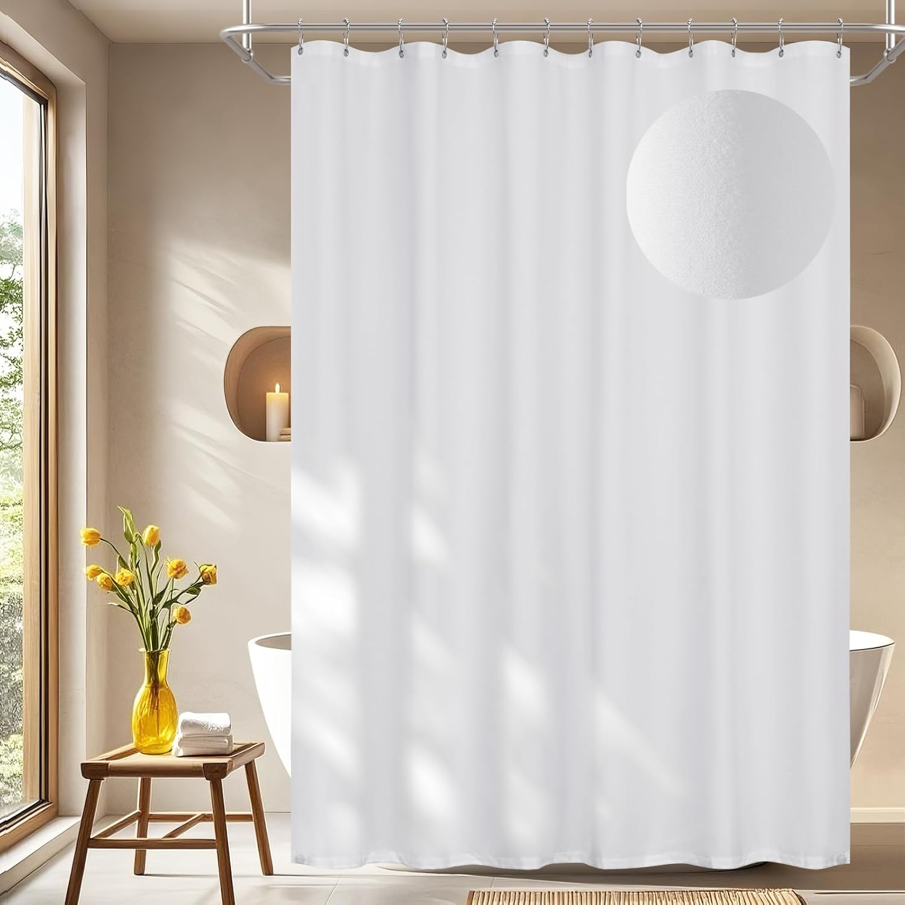

Ilane Tall
Product Researcher | Specializing in bathroom products and home textiles
All recommendations based on rigorous product research and customer review analysis.

Barossa Design Waffle Weave Shower Curtain
Classic hotel waffle weave, heavyweight fabric, machine washable, 45,457 reviews at 4.7/5
There is something undeniably appealing about stepping into a luxury hotel bathroom. The crisp white towels, the gleaming fixtures, and above all, that perfectly draped shower curtain with its elegant waffle weave texture that instantly communicates quality and sophistication. That signature hotel look has become one of the most sought-after bathroom aesthetics, and the good news is that you do not need a hotel renovation budget to achieve it. The right shower curtain can transform an ordinary bathroom into a spa-like retreat for as little as $10.
The luxury hotel shower curtain market in 2026 has matured significantly. Brands now offer heavyweight waffle weaves, TPU-backed microfibers, snap-in liner systems, and 230GSM premium fabrics that rival what you find in five-star properties. Whether you prefer a standalone decorative curtain paired with a liner or a modern 2-in-1 design with built-in waterproofing, there are excellent options at every price point from under $10 to around $86.
Based on our research into over 25 hotel-quality shower curtains and analysis of more than 108,000 verified customer reviews, we identified five standout products that deliver an authentic luxury hotel experience. Each one was evaluated on fabric quality, weight and drape, water resistance, ease of maintenance, and how closely it replicates that coveted five-star bathroom aesthetic that makes you feel like you are on vacation every time you shower.
Whether you are renovating your master bathroom, upgrading a guest bath, or simply want to bring that hotel spa feeling into your daily routine, this guide will help you find the best luxury hotel-style shower curtain for your space and budget.
What We Look For in a Luxury Hotel Shower Curtain
- Material and weight: Heavy-weight waffle weave or premium microfiber that drapes like a five-star curtain
- Fabric weight (GSM): Higher GSM means thicker, more luxurious feel and better performance
- Water resistance: Built-in waterproofing, TPU backing, or compatibility with a quality liner
- Washability: Machine washable fabrics that maintain their texture through multiple wash cycles
- Aesthetics: Clean white or neutral tones, textured weave, and professional-quality drape
Table of Contents
- Quick Comparison Table
- Our 5 Best Luxury Hotel Shower Curtains
- 1. Barossa Design Waffle Weave — Best Overall
- 2. eachope No Hook Waffle Weave — Best Premium
- 3. GORILLA GRIP Waffle Curtain — Best Heavyweight
- 4. Seenus Waterproof Microfiber — Best 2-in-1
- 5. ALYVIA SPRING Waterproof Fabric — Best Budget
- Buying Guide: Choosing a Luxury Hotel Shower Curtain
- Care Tips for Hotel-Style Shower Curtains
- Frequently Asked Questions
- Final Verdict & Top 3 Picks
Quick Comparison: All 5 Luxury Hotel Curtains at a Glance
| Shower Curtain | Category | Size | Price | Rating | Reviews |
|---|---|---|---|---|---|
| Barossa Design Waffle | Best Overall | 72x72" | $14.97 | 45,457 | |
| eachope No Hook | Best Premium | 71x74" | $86.03 | 1,069 | |
| GORILLA GRIP | Best Heavyweight | 72x72" | $68.69 | 3,974 | |
| Seenus Microfiber | Best 2-in-1 | 72x72" | $14.99 | 1,365 | |
| ALYVIA SPRING | Best Budget | 72x72" | $9.98 | 56,746 |
Our 5 Best Luxury Hotel-Style Shower Curtains of 2026
1. Barossa Design Waffle Weave Shower Curtain — Best Overall
Barossa Design Waffle Weave Shower Curtain
The Barossa Design Waffle Weave earns our Best Overall award because it delivers the exact aesthetic you see in luxury hotel bathrooms at a price that seems almost too good to be true. At just $14.97, this curtain features the classic waffle weave texture that has become synonymous with upscale hospitality design. The textured pattern creates visual depth and sophistication, hiding wrinkles and water spots while draping with the kind of elegant weight that instantly signals quality. According to customer reviews, many buyers report that guests have complimented their bathroom after installing this curtain, with some noting it looks "identical to what you see in Marriott or Hilton properties."
What separates the Barossa Design from dozens of other waffle weave options on Amazon is the fabric quality and attention to detail. The heavyweight polyester weave has a substantial feel that resists the limp, cheap drape you get from thinner alternatives. The waffle texture is not just decorative — based on our research, it creates micro-channels that encourage water to bead and roll off rather than soaking into the fabric, giving this curtain respectable water resistance even without a liner. Reviewers consistently note that the fabric maintains its texture and appearance through many machine wash cycles, which is a critical factor for long-term hotel-quality aesthetics.
With over 45,000 reviews and a 4.7 out of 5 rating, the Barossa Design has earned its place as one of the most trusted shower curtains on Amazon. Reviewers frequently describe it as "the best shower curtain I have ever owned" and highlight three standout qualities: the luxurious appearance that far exceeds its price, the heavy fabric that stays in place during showers rather than billowing inward, and the durable construction that holds up to regular washing. Multiple reviewers mention purchasing additional curtains for every bathroom in their home after trying their first one.
- Material: Heavy-weight polyester waffle weave
- Size: 72" x 72" — standard bathtub/shower combo fit
- Waterproofing: Water-resistant weave; best paired with a liner
- Machine washable: Yes, gentle cycle cold water
- Grommets: Rust-resistant metal grommets, fits standard hooks
- Colors: White, plus additional neutral tones
Pros
- Classic hotel waffle weave texture at under $15
- Heavyweight fabric drapes beautifully and stays in place
- Machine washable with no loss of texture
- 45,000+ reviews with 4.7 rating — exceptional track record
- Rust-resistant grommets for long-term durability
Cons
- Requires a separate liner for full waterproofing
- White color may show soap buildup over time
- Standard 72x72 size only — no extra-long option
2. eachope White No Hook Waffle Weave Shower Curtain — Best Premium
eachope White No Hook Waffle Weave Shower Curtain

If you have ever stayed at a truly world-class hotel and marveled at the shower curtain system — the way it hangs flawlessly, the thick luxurious fabric, the liner that stays perfectly in place — the eachope No Hook Waffle Weave is the product that replicates that experience at home. At $86.03, it is the most expensive curtain on our list, but it is also the most feature-rich, combining a thick 230GSM waterproof waffle weave outer curtain with a snap-in waterproof liner, a mesh top window for ventilation, and a no-hook design that eliminates fussy installation. It is, simply put, the most comprehensive hotel shower curtain system available to consumers.
The 230GSM fabric weight is the standout specification here. For context, most budget waffle weave curtains clock in around 120-160GSM, meaning the eachope is nearly twice as thick as standard options. According to reviewers, you can feel the difference immediately — the fabric has a substantial, almost towel-like weight that creates a beautiful drape and completely eliminates the problem of the curtain blowing inward during showers. The snap-in liner system is another premium touch: rather than fumbling with two separate curtains on two sets of hooks, the waterproof liner clicks directly into the outer curtain, creating a single integrated unit. The mesh top window allows steam to escape, reducing moisture buildup and mildew risk.
Despite being a newer product with just over 1,000 reviews, the eachope has earned an impressive 4.7 rating that matches our top pick. Reviewers consistently describe it as a "game-changer" and note that the quality difference compared to cheaper waffle curtains is immediately obvious. Several reviewers who previously used hotel-grade curtains from hospitality supply companies report that the eachope is comparable in quality at a fraction of the commercial price. The 71x74-inch size provides slightly more coverage than standard curtains, and the no-hook design makes installation and removal for washing remarkably simple.
- Material: 230GSM waterproof waffle weave polyester
- Size: 71" x 74" — slightly longer than standard for extra coverage
- Waterproofing: Built-in waterproof fabric plus snap-in liner included
- Installation: No hooks required — snap-in design for existing rings
- Ventilation: Mesh top window reduces steam and mildew
- Machine washable: Yes, gentle cycle
Pros
- 230GSM fabric — nearly twice as thick as standard options
- Snap-in liner system eliminates double-curtain hassle
- Mesh top window for ventilation and mildew prevention
- No-hook design for easy installation and washing
- 4.7 rating matches best-in-class despite premium price
Cons
- Highest price on our list at $86.03
- Fewer reviews than established budget options
- Non-standard 71x74 size may not suit all setups
3. GORILLA GRIP Waffle Shower Curtain Ivory Cream — Best Heavyweight
GORILLA GRIP Waffle Shower Curtain Ivory Cream

The GORILLA GRIP brand has built its reputation on making products that are tougher and thicker than the competition, and their waffle shower curtain lives up to that promise. This is one of the heaviest, most substantial waffle weave curtains available on Amazon, with a fabric weight that reviewers consistently describe as "noticeably thicker" than alternatives they have tried. The ivory cream color adds warmth to the classic hotel aesthetic, making it particularly well-suited for bathrooms with warm-toned tile, wood accents, or brushed gold fixtures. If you have been disappointed by waffle curtains that felt thin or flimsy, the GORILLA GRIP is specifically engineered to address that frustration.
Beyond raw fabric weight, the GORILLA GRIP incorporates several quality-of-life features that elevate it above standard waffle curtains. The fabric is wrinkle-resistant, which means it hangs smoothly straight out of the package without needing to be ironed or steamed — a common annoyance with polyester curtains. The rust-resistant grommets are reinforced to handle the extra weight of the thick fabric without bending or tearing, and they fit standard shower curtain hooks and rings. According to customer reviews, the heavy weight of the fabric means this curtain stays firmly in place during showers, with zero billowing or clinging, which is a significant upgrade from lighter curtains that get sucked inward by shower air currents.
With nearly 4,000 reviews and a solid 4.6 rating, the GORILLA GRIP has earned respect among buyers who demand premium quality. Reviewers frequently compare it favorably to hotel curtains they have encountered in upscale properties, with several noting that the ivory cream color feels more "intentional and designed" than plain white. The curtain is fully machine washable and, according to long-term reviewers, maintains its thickness and texture through numerous wash cycles. At $68.69, it sits in the premium tier, but for buyers who want the thickest, most luxurious-feeling waffle weave curtain available, the GORILLA GRIP delivers a tangible quality difference that justifies the investment.
- Material: Thick heavyweight waffle weave polyester
- Size: 72" x 72" — standard bathtub/shower combo fit
- Waterproofing: Water-resistant; best paired with a liner for full coverage
- Special features: Wrinkle-resistant fabric, stays smooth out of package
- Grommets: Reinforced rust-resistant metal grommets
- Machine washable: Yes, maintains thickness through many washes
Pros
- One of the thickest waffle weave curtains available
- Wrinkle-resistant — hangs smooth right out of the package
- Ivory cream color adds warmth to hotel aesthetic
- Heavy weight eliminates billowing during showers
- Reinforced grommets built for heavy fabric
Cons
- Premium price at $68.69
- Requires a separate liner for waterproofing
- Heavier fabric takes longer to dry after washing

4. Seenus Waterproof Soft Microfiber Shower Curtain — Best 2-in-1
Seenus Waterproof Soft Microfiber Shower Curtain

The Seenus Waterproof Soft Microfiber is the smartest all-in-one solution on our list, combining a soft, fabric-feel exterior with a fully waterproof TPU backing that eliminates the need for a separate liner entirely. At just $14.99, it delivers the convenience of a single-curtain setup with the polished appearance of a hotel-quality fabric curtain. The soft microfiber material has a clean, smooth drape that looks deliberately chosen rather than purely functional, giving your bathroom that curated spa aesthetic without the complexity of managing two separate layers. According to reviewers, the fabric feels notably softer than standard polyester curtains, creating a more luxurious tactile experience.
The TPU (thermoplastic polyurethane) backing is what makes the Seenus a standout in the 2-in-1 category. Unlike PVC or basic plastic lamination, TPU is flexible, durable, and non-toxic — it will not crack, stiffen, or develop that unpleasant chemical smell over time. The two large magnets built into the bottom hem keep the curtain securely against the tub wall, preventing water from escaping around the edges. This is a detail that many budget 2-in-1 curtains skip, but it makes a meaningful difference in real-world use. Reviewers note that the magnets are strong enough to hold the curtain in place even during high-pressure showers, while being gentle enough not to scratch bathtub surfaces.
With 1,365 reviews and a 4.6 rating, the Seenus has quickly built a loyal following among buyers who appreciate its simplicity and performance. The most common praise in customer reviews centers on three points: the genuinely soft feel that distinguishes it from plasticky alternatives, the reliable waterproofing that keeps bathroom floors dry without a liner, and the value proposition at just $14.99. Several reviewers who previously used expensive waffle weave curtains with separate liners report that they prefer the Seenus for its simplicity — one curtain, one set of hooks, and complete waterproof protection. The curtain is machine washable and holds up well through repeated wash cycles.
- Material: Soft microfiber with TPU waterproof backing
- Size: 72" x 72" — standard bathtub/shower combo fit
- Waterproofing: Built-in TPU backing — fully waterproof, no liner needed
- Magnets: 2 large weighted magnets in bottom hem
- Machine washable: Yes, gentle cycle cold water
- Design: Clean hotel-quality white microfiber exterior
Pros
- True 2-in-1 design — no separate liner required
- Soft microfiber feels more luxurious than standard polyester
- Non-toxic TPU backing is flexible and durable
- 2 large magnets keep curtain securely against tub
- Exceptional value at $14.99 for a complete solution
Cons
- Lacks the textured look of waffle weave curtains
- TPU backing may reduce breathability compared to fabric-only curtains
- Fewer reviews than more established competitors

5. ALYVIA SPRING Waterproof Fabric Shower Curtain — Best Budget
ALYVIA SPRING Waterproof Fabric Shower Curtain

The ALYVIA SPRING proves that achieving a luxury hotel bathroom aesthetic does not require spending a fortune. At just $9.98, it is the most affordable curtain on our list, yet it delivers a soft fabric exterior with a built-in waterproof lining that eliminates the need for a separate liner. The white fabric has a subtle sheen that looks polished and intentional, giving your bathroom that clean, hotel-fresh appearance at a price point that makes it easy to replace whenever you want a fresh start. For renters, guest bathrooms, or anyone outfitting multiple bathrooms on a budget, the ALYVIA SPRING is the value champion.
The dual-layer construction is the ALYVIA SPRING's defining feature. The outer surface has the soft hand-feel and visual elegance of a decorative fabric curtain, while the inner lining provides complete waterproof protection. Three magnets in the bottom hem — one more than most competitors in this price range — keep the curtain snugly against the tub wall to prevent splash-out. According to customer reviews, the curtain is lightweight enough to feel airy and easy to manage, yet substantial enough to hang neatly without looking cheap. The machine washable fabric holds up through months of daily use, and reviewers note that it maintains its appearance through many wash cycles without losing its waterproof properties.
With nearly 57,000 reviews and a consistent 4.5 rating, the ALYVIA SPRING has proven itself as one of the most trusted budget shower curtains on the market. Reviewers frequently highlight the dramatic aesthetic upgrade compared to the plastic liner it replaced, with many describing it as making their bathroom look "instantly upgraded" or "like a different room." The three-magnet system receives particular praise for eliminating the annoyance of water escaping around the curtain edges. At under $10, the ALYVIA SPRING offers what may be the highest return on investment of any bathroom accessory — genuine hotel style for the price of a takeout lunch.
- Material: Soft fabric exterior with waterproof inner lining
- Size: 72" x 72" — standard bathtub/shower combo fit
- Waterproofing: Built-in waterproof backing — no liner required
- Magnets: 3 weighted magnets in bottom hem for secure draping
- Machine washable: Yes, lightweight and easy to handle
- Colors: White and additional neutral tones available
Pros
- Under $10 — best value for hotel-style aesthetics
- Built-in waterproof lining eliminates need for a liner
- 3 magnets for superior splash protection
- 56,000+ reviews — massively proven reliability
- Lightweight and machine washable for easy care
Cons
- Thinner fabric than premium waffle weave options
- Inner lining can feel plasticky when touched directly
- Lacks the textured depth of waffle or microfiber curtains

Buying Guide: Choosing a Luxury Hotel Shower Curtain
Recreating the luxury hotel bathroom experience starts with understanding what makes those curtains look and feel so different from what most people have at home. The decision comes down to three key factors: material and fabric weight, size and fit, and styling approach. Get these right, and your bathroom will look like it belongs in a boutique hotel.
Material Guide: What Makes a Curtain Feel Luxurious
The material is the single most important factor in achieving a genuine hotel feel. Here is what you need to know about each option:
Waffle Weave Polyester is the gold standard for luxury hotel shower curtains, and it is what most five-star properties use. The textured grid pattern creates visual depth, hides wrinkles and water spots, and gives the curtain a substantial, high-quality appearance. Products like the Barossa Design, eachope, and GORILLA GRIP on our list all use waffle weave. The key differentiator is fabric weight, measured in GSM (grams per square meter). Budget waffle curtains typically come in at 120-160GSM, while premium options like the eachope reach 230GSM. Higher GSM means a thicker, heavier curtain that drapes better and lasts longer.
Microfiber with TPU Backing is a modern alternative that delivers a smooth, soft-to-the-touch feel with built-in waterproofing. The Seenus on our list uses this approach. While it lacks the visual texture of waffle weave, microfiber offers a cleaner, more contemporary aesthetic that works well in minimalist and modern bathrooms. The TPU backing provides waterproofing without the rigidity or chemical concerns of PVC.
Fabric with Waterproof Lining is the budget-friendly approach to hotel-style aesthetics, used by the ALYVIA SPRING. These curtains combine a soft fabric exterior with a laminated waterproof inner layer, creating a 2-in-1 solution that looks like a decorative curtain but functions like a liner. The trade-off is a thinner overall feel compared to premium waffle weave options.
What is the most luxurious curtain fabric?
For shower curtains specifically, the most luxurious option is a heavyweight waffle weave polyester at 200GSM or above. This is the same fabric used in five-star hotels like the Ritz-Carlton and Four Seasons. The waffle texture creates a spa-like visual that simpler fabrics cannot replicate. For non-shower window curtains, silk, velvet, and Belgian linen are considered the most luxurious options, though these materials are not suitable for the humidity of a bathroom environment.
Which curtains do hotels use?
According to hospitality industry sources, most upscale hotels use white waffle weave polyester shower curtains paired with a separate waterproof liner. White is preferred because it photographs well for listings, looks universally clean and fresh, and can be bleached for sanitation between guests. The waffle texture is favored over smooth fabric because it hides wrinkles, water spots, and minor stains while creating an upscale aesthetic. Budget hotel chains typically use plain white polyester, while luxury properties invest in heavier waffle weaves — the same category represented by products like the Barossa Design and GORILLA GRIP on our list.
Size Guide
Getting the right size ensures your curtain hangs properly and contains water effectively:
- Standard (72x72"): Fits most bathtub-shower combos. This is the correct size for 90% of residential bathrooms. The Barossa Design, GORILLA GRIP, Seenus, and ALYVIA SPRING all come in this size.
- Slightly longer (71x74"): Provides extra length for better coverage and a more intentional, polished look. The eachope uses this size, which is also common in hotel installations where a few extra inches prevent any gap at the bottom.
- Extra-long (72x78" or 72x84"): For ceiling-mounted shower rods or exceptionally tall showers. Check if your preferred curtain is available in these sizes before purchasing.
- Stall (54x72" or 36x72"): For standalone shower stalls without a bathtub. Fewer luxury options are available in stall sizes.
Style Tips for a Hotel Bathroom
Your shower curtain sets the visual tone for the entire bathroom. Here are research-backed tips for achieving an authentic luxury hotel aesthetic:
- Stick to white or ivory: There is a reason luxury hotels almost universally choose white. It creates a sense of cleanliness, spaciousness, and timelessness that colored curtains cannot match. If pure white feels too stark, ivory cream (like the GORILLA GRIP) adds warmth while maintaining the hotel look.
- Choose texture over pattern: Waffle weave, slub texture, or a subtle matte finish are far more elegant than printed patterns. Texture communicates quality, while bold patterns can date quickly and limit your decor options.
- Coordinate your hardware: Match your curtain rings and rod to your other bathroom fixtures. Brushed nickel or chrome create a modern hotel feel, while matte black suits contemporary designs and oil-rubbed bronze complements traditional or farmhouse styles.
- Eliminate visual clutter: Hotels look luxurious partly because they minimize visible products. Use a caddy or shelf to organize shower products rather than hanging bottles from the curtain rod or stacking them on the tub edge.
- Add coordinating textiles: A matching white bath rug and plush white towels complete the hotel look. The combination of a waffle weave curtain, thick cotton towels, and a quality bath mat creates a cohesive spa atmosphere.
Pro tip: According to Good Housekeeping's textile testing, the key to a curtain looking expensive is fabric weight, not thread count or special treatments. A heavier curtain drapes better, wrinkles less, and communicates quality at a glance — which is exactly why hotels invest in heavyweight fabrics.
Care Tips for Hotel-Style Shower Curtains
A luxury shower curtain only maintains its five-star appearance with proper care. Here are the essential maintenance practices that keep hotel-quality curtains looking fresh for months or even years:
After every shower: Spread the curtain fully across the rod so it can dry completely. This is the single most important maintenance habit. Bunching a wet curtain creates trapped moisture in the folds, which is the primary cause of mildew, musty odors, and premature deterioration. Hotels train their housekeeping staff to spread shower curtains as part of every room turnover for exactly this reason.
Ventilation is essential: Run your bathroom exhaust fan for at least 15-20 minutes after every shower, or crack a window if you do not have a fan. Reducing ambient humidity prevents mildew from developing on the curtain, liner, and every other surface in your bathroom. This is especially important for heavyweight waffle weave curtains that take longer to dry due to their thicker fabric.
Wash regularly: Machine wash your curtain every 2-4 weeks on a gentle cycle with cold water. Use a mild detergent and add half a cup of baking soda to neutralize odors and break down soap scum. For waffle weave curtains, adding a couple of bath towels to the load provides gentle scrubbing action against the textured surface. Always hang to dry — avoid high-heat dryer settings that can damage waterproof coatings, shrink fabric, or flatten waffle weave texture.
Address mildew immediately: If you spot early signs of mildew (pink or black spots, musty smell), spray the affected area with a solution of equal parts white vinegar and water. Let it sit for 10 minutes, then wipe clean and wash the curtain. For stubborn stains on fabric curtains, a paste of baking soda applied before washing is effective. Avoid bleach on TPU-backed or PEVA curtains, as it degrades the waterproof layer.
When to replace: With proper care, premium waffle weave curtains can last 1-2 years or longer. Budget 2-in-1 curtains with waterproof backing typically last 8-12 months of daily use. Replace your curtain when washing no longer removes musty smells, when the waterproof backing peels or cracks, or when the fabric develops persistent discoloration that detracts from the hotel-fresh aesthetic.
Frequently Asked Questions
For shower curtains, the most luxurious fabric is a heavyweight waffle weave polyester, typically 200GSM or higher. This is the same textured fabric used in five-star hotels because it drapes beautifully, creates visual depth, and feels substantial to the touch. Products like the eachope 230GSM and GORILLA GRIP deliver this premium feel at home. The waffle texture is preferred over smooth fabric because it hides wrinkles and water spots while projecting sophistication. For non-bathroom curtains, silk, velvet, and Belgian linen are considered the most luxurious options.
Most upscale hotels use white waffle weave polyester shower curtains paired with a separate waterproof liner. White is the universal choice because it looks clean, photographs well for listings, and can be sanitized with bleach between guests. The waffle texture is preferred because it hides wrinkles, resists showing water spots, and creates an immediately upscale visual. Budget hotel chains use plain white polyester, while luxury properties like Marriott, Hilton, and Ritz-Carlton invest in heavier-weight waffle weave fabrics — the same category as the Barossa Design and GORILLA GRIP on our list.
For a luxury hotel look, polyester waffle weave is the best material overall. It combines durability, machine washability, water resistance, and an upscale appearance that other materials struggle to match. For a fully waterproof 2-in-1 solution that eliminates the need for a separate liner, microfiber with TPU backing (like the Seenus) or fabric with waterproof lining (like the ALYVIA SPRING) are excellent choices. Avoid PVC vinyl, which can release harmful chemicals and has an unpleasant chemical odor.
It depends on the curtain type. Traditional waffle weave curtains like the Barossa Design and GORILLA GRIP are water-resistant but perform best with a separate waterproof liner behind them — this is exactly how hotels set up their bathrooms. However, modern 2-in-1 designs like the Seenus (TPU backing) and ALYVIA SPRING (waterproof lining) have built-in waterproofing that eliminates the need for a liner entirely. The eachope offers the best of both worlds with an included snap-in liner that integrates with the outer curtain.
Start with a white waffle weave shower curtain — this is the signature element of luxury hotel bathrooms. Add plush white towels, a quality bath mat or rug, and matching accessories in a consistent finish (brushed nickel, chrome, or matte gold). Keep the color palette neutral with whites, creams, and soft grays. Minimize visible clutter by storing products in a cabinet or coordinating caddy. Finally, ensure your bathroom is well-lit and always clean. A matching luxury bath rug from our sister site completes the spa transformation.
Wash your luxury shower curtain every 2-4 weeks on a gentle cycle with cold water and mild detergent. Between washes, the most important habit is spreading the curtain fully across the rod after every shower so it can dry completely — this prevents mildew more effectively than any cleaning product. Add half a cup of baking soda to the wash cycle to neutralize odors. Hang to dry rather than using a dryer to preserve waterproof coatings and fabric texture. Most waffle weave and microfiber curtains maintain their appearance through dozens of wash cycles.
Not always. Our research shows that curtains in the $10-15 range, like the Barossa Design ($14.97) and Seenus ($14.99), deliver excellent hotel-quality aesthetics and performance. Premium curtains like the eachope ($86.03) and GORILLA GRIP ($68.69) offer noticeably thicker fabric and advanced features such as snap-in liners and superior wrinkle resistance, but the visual difference from across a bathroom is subtle. The best value for most buyers is in the $10-20 range, where you get genuine hotel quality without a significant premium markup. Reserve the $60+ options for situations where fabric thickness and advanced features are a priority.
Final Verdict: Our Top 3 Picks
After extensive research and analysis of over 108,000 customer reviews, each of our 5 luxury hotel-style shower curtains excels in its specific category. But if we had to narrow it down to three recommendations that cover the widest range of needs and budgets, here they are:
Best Overall: Barossa Design Waffle Weave ($14.97)
The quintessential hotel shower curtain experience at an unbeatable price. With 45,000+ reviews at 4.7 stars, it delivers the exact waffle weave aesthetic found in luxury hotel bathrooms for under $15. The best balance of quality, appearance, and value on the market.
Best Premium: eachope No Hook Waffle Weave ($86.03)
For buyers who want the absolute best — 230GSM fabric, snap-in liner, mesh top ventilation, and no-hook convenience. This is the closest you can get to a commercial hotel curtain system without buying from a hospitality supplier.
Best Value: ALYVIA SPRING Waterproof Fabric ($9.98)
Under $10 for a complete hotel-style curtain with built-in waterproof lining — no liner needed. With 56,000+ proven reviews, it is the most cost-effective way to transform your bathroom into a spa-like retreat.
The luxury hotel shower curtain market in 2026 has never been better for consumers. Whether you spend $9.98 on the ALYVIA SPRING or $86.03 on the eachope, you are getting a genuinely well-engineered product backed by thousands of satisfied customers. The common thread across all five products on our list is that they deliver an authentic five-star bathroom aesthetic that was previously only available through commercial hospitality suppliers. The key is matching the right curtain to your specific priorities — and with this guide, you now have everything you need to make that decision with confidence.
Ready to Transform Your Bathroom Into a Luxury Hotel?
Join hundreds of thousands of satisfied customers who have elevated their daily shower experience with our expert-researched picks.
All Amazon Prime eligible | 30-day returns | Verified customer reviews
Complete Your Bathroom Upgrade
Our network of expert review sites covers every bathroom essential: